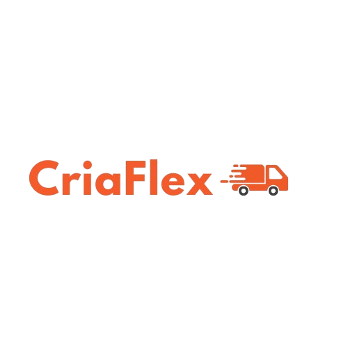

Descubra seu Produto Ideal e o receba no seu tempo!
Sobre a nossa empresa:
Ser reconhecida como uma empresa de referência no mercado, oferecendo entregas rápidas, confiáveis e que superem as expectativas dos clientes.
Garantir eficiência, segurança e qualidade excepcionais em cada entrega, proporcionando uma experiência única e satisfatória para todos os envolvidos.
Promover conexões genuínas entre pessoas e a rica cultura artesanal, entregando produtos com rapidez, segurança e cuidado especial.
Atuar com total transparência, responsabilidade e excelência em cada etapa do processo, desde o manuseio até a entrega dos produtos, assegurando a confiança e a satisfação dos clientes.